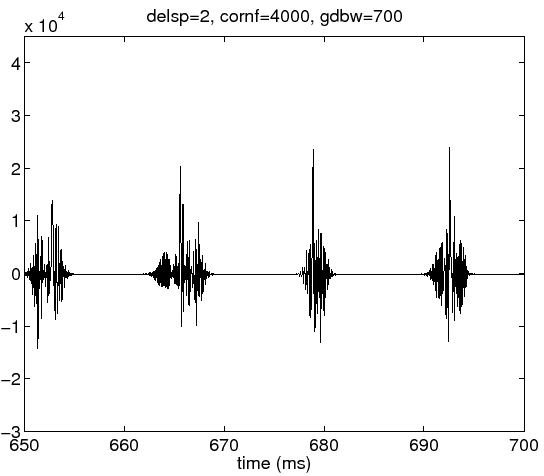
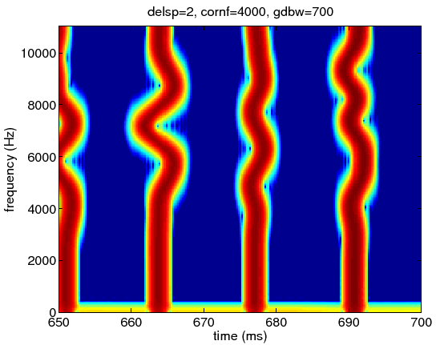

Next: groupDelaySpatialBandWidth = 7Hz
Up: Group delay parameters (*)
Previous: Parameter: groupDelayRandomizeCornerFrequency (*)
The default value of this parameter is 70 Hz.
This parameter defines the coarseness of the
group delay trajectory along the frequency axis.
The uncertainty relation between temporal resolution and
frequency resolution introduces constraint,
that makes energy to spread temporally
when this parameter decreases.
This parameter is used to control this temporal spread as
(a kind of) side effect.
This control is implemented as a moving averaging
on the frequency axis.
The following examples show effects when
this parameter is one tenth and ten times of the
default value.
The group delay dispersion is also set 2ms here to
illustrate effects more salient.
prminS.groupDelayStandardDeviation=2;
prminS.groupDelaySpatialBandWidth=700;
sy700 = exstraightsynth(f0raw,n3sgram*0+100,ap*0-80,fs,prminS);
The effects are not salient.
The temporal spread is somewhat small.
Figure 14:
Waveform of the excitation source signal when the spatial frequency
bandwidth is 700Hz.
|  |
The spectrographic display looks clearly different from the default case.
A cloud like time-frequency spread of energy found in default case
does not exist in this representation.
The energy trajectory along the frequency axis looks smoother.
Figure 15:
Spectrogram of the excitation source signal when the spatial frequency
bandwidth is 700Hz.
|  |
Subsections
Next: groupDelaySpatialBandWidth = 7Hz
Up: Group delay parameters (*)
Previous: Parameter: groupDelayRandomizeCornerFrequency (*)
Hideki Kawahara
2007-05-05